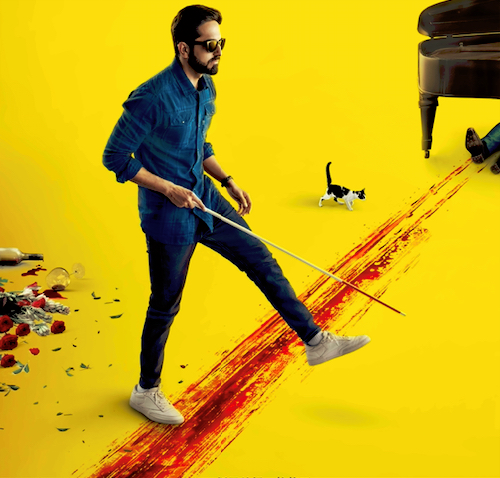

|

|
调音师
《调音师》是由斯里兰姆·拉格万执导，阿尤斯曼·库拉纳、塔布
拉迪卡·艾普特、安尔·德霍万联合主演的悬疑电影，于2018年10月5日在印度上映，2019年4月3日中国大陆上映。《调音师》故事灵感来自于2010年的同名法国短片，讲述了一个假扮盲人的钢琴调音师阿卡什在意外成为一起凶案的“目击证人”后，所遭遇的种种出其不意的经历的故事。
>>>
|
《调音师》是由斯里兰姆·拉格万执导，阿尤斯曼·库拉纳、塔布 拉迪卡·艾普特、安尔·德霍万联合主演的悬疑电影，于2018年10月5日在印度上映，2019年4月3日中国大陆上映.
《调音师》故事灵感来自于2010年的同名法国短片，讲述了一个假扮盲人的钢琴调音师阿卡什在意外成为一起凶案的“目击证人”后，所遭遇的种种出其不意的经历的故事
| 中文名 |
调音师 |
主 演 |
阿尤斯曼·库拉纳、塔布、拉迪卡·艾普特、安尔·德霍万 |
外文名 |
Andhadhun、The Blind Melody |
片 长 |
139 分钟 |
类 型 |
喜剧 / 悬疑 / 惊悚 / 犯罪 |
上映时间 |
2018年10月5日（印度）、2019年4月3日（中国大陆） |
制片地区 |
印 度 |
拍摄地点 |
印 度 |
剧情简介
一个假装盲人的钢琴师阿卡什（阿尤斯曼·库拉纳饰），意外闯入捉奸现场并目睹女主人西米（塔布饰）和其情夫曼诺拉（马纳夫·维吉饰）清理男主人普拉默（阿尼尔·达万饰）尸体，离开凶案现场后的阿卡什，在“盲”和“不盲”之间犹豫，却没想到蛇蝎主妇西米和她的情夫早已先人一步。西米先是来到阿卡什打工的餐厅，当着阿卡什和餐厅老板的面扮演了一出“老公居然在结婚纪念日放我鸽子”的戏码，后更是直接来到阿卡什家中，对他百般试探，尖叫面具、当面下毒，甚至直接掏出手枪，阿卡什不堪折磨举双手投降，所遭遇的种种出其不意的经历
本片改编自2010年的同名法国高分悬疑短片。
演职员表
演员表
| 演员 |
饰演角色 |
| 阿尤斯曼·库拉纳 |
阿卡什 |
| 塔布 |
西米 |
| 拉迪卡·艾普特 |
苏菲 |
| 阿尼尔·达万 |
普拉默·辛哈 |
| 马纳夫·维吉 |
曼诺拉 |
| 萨基尔·侯赛因 |
斯瓦米 |
职员表
| 制作人 |
Vishal Bajaj、Vicky Bhatia、Keval Garg、Ashish Kathpal、Kanchan Marathe、Pratik Nandkumar More、Dikshajyoti Routary、Sanjay
Routray、Ashok Vashodia、Maciej Zemojcin |
导演 |
斯里兰姆·拉格万 |
副导演（助理） |
Konrad Bajno、Yogesh Chandekar、Jashvender Chauhan、Aditya Gupta、Priyanka Kashikar、Aastha Khanna、Tisha Mehra、Daani
Naidu、Rakesh Sain、Hera Sajid、Abhishek Shukla、Pooja Ladha Surti、奥利维耶·特雷内、Arijit Biswas |
编剧 |
奥利维耶·特雷内、Arijit Biswas、Yogesh Chandekar、Sriram Raghavan、Hemanth M. Rao、Pooja Ladha Surti |
摄影 |
K.U. Mohanan |
配乐 |
Daniel B. George |
剪辑 |
Pooja Ladha Surti |
角色介绍

|
阿卡什 |
一个穷困潦倒的钢琴“大师”，为了筹得20万去伦敦参加比赛，阿卡什进行了一场“疯狂的实验”——假装盲人。本以为“无害”的这场实验，给阿卡什带来了意外的杀机。偶然闯入捉奸现场并目睹西米和曼诺拉清理普拉默的尸体，阿卡什陷入了是报警还是装瞎的困境。
|

|
西米 |
曾经梦想成为电影巨星的西米，嫁给了地产大亨普拉默成为家庭主妇。由于的年龄差，为两人的婚后生活带来隔阂。性感美艳、不甘无趣的西米，与警长曼诺拉有着一段风流韵事。直到有一天，谎称要出差的丈夫普拉默提前回家，正好撞见西米出轨。西米错手杀死丈夫。为了掩盖自己的罪恶，西米开始不责手段消灭所有可能的证人。
|

|
苏菲 |
餐厅老板的女儿苏菲，因为骑车不小心撞倒过马路阿卡什，与阿卡什相识相知。单纯善良的苏菲，以为阿卡什是一个满腹才华的“盲人钢琴师”，于是介绍他到自家的餐厅表演钢琴。倾心于阿卡什才华的苏菲，不久便爱上了阿卡什。基于谎言之上的这段爱情，前途未知。
|

|
普拉默 |
已经过气的影视巨星，转行投资地产成为了不小的富翁。普拉默一直沉迷于自己过去的辉煌，与妻子西米是典型的老夫少妻。为了给妻子一个浪漫的结婚纪念日惊喜，普拉默邀请阿卡什到家中进行一场私人演奏会，却没想西米也给自己准备了一个巨大的“惊喜”。
|

|
曼诺拉 |
西米的情夫，也是浦那警察局的警长，同时也是一个有妇之夫。曼诺拉身材健美，因为妻子每天都给他煮16个鸡蛋，但内心里，他却是一个懦弱、严重妻管严的男人。
|
获奖记录
| 年份 |
颁奖方 |
奖项 |
获奖者 |
获奖/提名 |
| 2019年 |
第64届印度电影观众奖 |
最佳影片 |
《调音师》 |
获奖 |
| 2019年 |
第64届印度电影观众奖 |
最佳男主角 |
阿尤斯曼·库拉纳 |
获奖 |
| 2019年 |
澳大利亚电影与电视艺术学院奖 |
最佳亚洲电影 |
《调音师》 |
提名 |
影片评价
《调音师》有着一个扎实的剧作基础，它的故事灵感来自于2010年轰动一时的同名法国短片，仅用14分钟，塑造了一个假扮盲人的钢琴调音师以及他“所见”的世界，并在他闯入一个凶案现场后将悬念和紧张感提升到极致，结尾的一声枪响更是神来之笔，成为悬疑剧作上教科书式的存在。《调音师》在同名法国短片的基础上做出了许多独特又突破脑洞的扩充。细看先导海报，破碎的眼镜、错位的琴键、洒翻的咖啡、尖锐的针筒等如此多的元素，都在片中起到关键作用。多达50余处的反转，每一个反转点都像是面对“薛定谔的猫”，不去亲眼见证，永远不知道接下来会发生什么